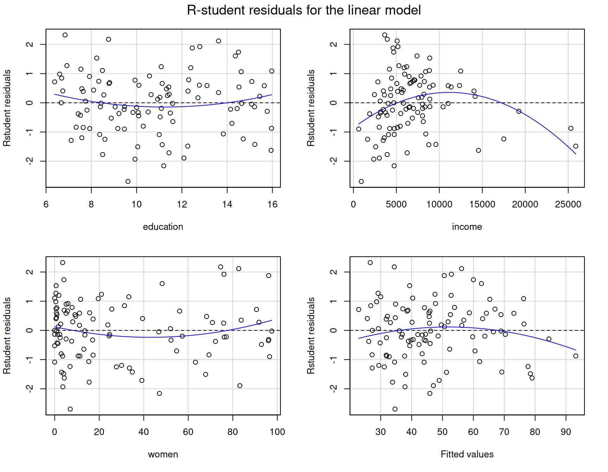
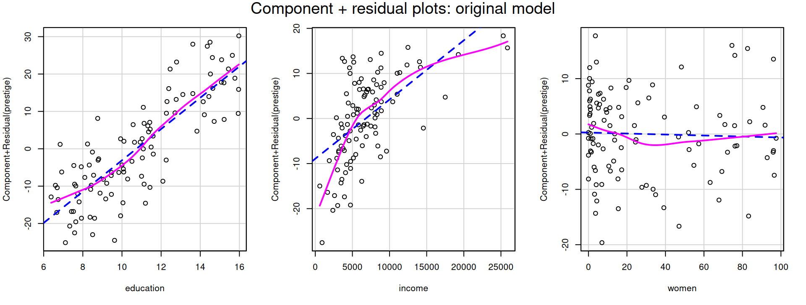
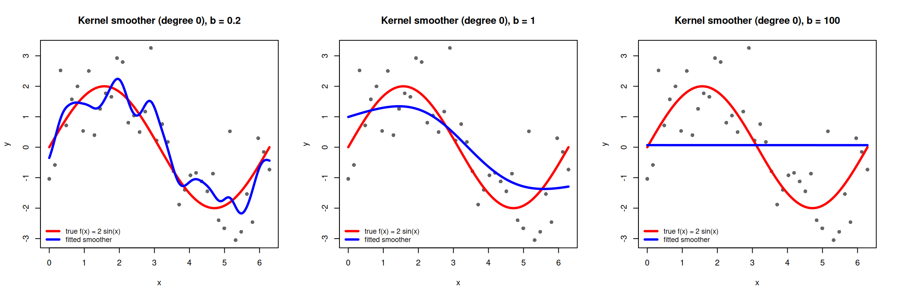
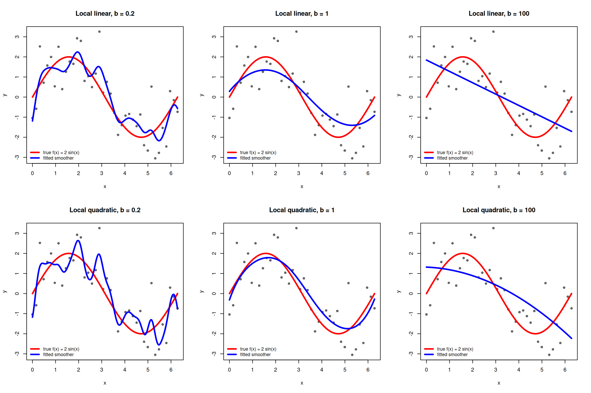

Homework 5: Polynomial Regression and Nonparametric Regression — Solutions
MATH 4780 / MSSC 5780 · Fall 2026
Statistical Computing and Data Analysis
The answers below follow the question numbering in hw-5.qmd. Questions 1–5 use the 10-observation rocket propellant data, Questions 6–8 use the Prestige data from carData, and Questions 9–11 use simulated data from \(y=2\sin(x)+\epsilon\). Printed values are rounded; R keeps full precision for calculations.
Polynomial Regression on Rocket Propellant Data
1. Second-order polynomial model
fit_quad <-lm(y ~ x +I(x^2), data = rocket)summary(fit_quad)
Call:
lm(formula = y ~ x + I(x^2), data = rocket)
Residuals:
Min 1Q Median 3Q Max
-0.005364 -0.002727 0.001045 0.002409 0.003273
Coefficients:
Estimate Std. Error t value Pr(>|t|)
(Intercept) 1.633000 0.004196 389.2 < 2e-16 ***
x -1.232182 0.007010 -175.8 5.09e-14 ***
I(x^2) 1.494545 0.002484 601.6 < 2e-16 ***
---
Signif. codes: 0 '***' 0.001 '**' 0.01 '*' 0.05 '.' 0.1 ' ' 1
Residual standard error: 0.003568 on 7 degrees of freedom
Multiple R-squared: 1, Adjusted R-squared: 1
F-statistic: 1.859e+06 on 2 and 7 DF, p-value: < 2.2e-16
# Compare with the straight-line modelfit_lin <-lm(y ~ x, data = rocket)summary(fit_lin)$r.squared
[1] 0.902621
anova(fit_lin, fit_quad)
Analysis of Variance Table
Model 1: y ~ x
Model 2: y ~ x + I(x^2)
Res.Df RSS Df Sum of Sq F Pr(>F)
1 8 4.6070
2 7 0.0001 1 4.6069 361974 < 2.2e-16 ***
---
Signif. codes: 0 '***' 0.001 '**' 0.01 '*' 0.05 '.' 0.1 ' ' 1
The fitted model is
\[
\hat y = 1.633 - 1.2322\,x + 1.4945\,x^2 .
\]
For \(H_0:\beta_2=0\) versus \(H_1:\beta_2\ne0\), the marginal test gives \(t=601.6\) on \(n-p=7\) df with \(p<2\times10^{-16}\), so we reject \(H_0\) at \(\alpha=0.05\). The partial \(F\) test comparing the straight-line and quadratic models gives the same conclusion (\(F=t^2\approx 3.6\times10^{5}\)).
The quadratic term is clearly needed. The straight line explains \(R^2=0.903\) of the variation in weight loss and leaves an obvious curved pattern, while the quadratic model explains essentially all of it (\(R^2>0.99999\), \(s=0.0036\) kg). The weight loss accelerates with time since production, which a straight line cannot capture.
# Location of the minimum of the fitted parabolax_min <--coef(fit_quad)[2] / (2*coef(fit_quad)[3])unname(x_min)
[1] 0.4122263
Yes, extrapolation with a polynomial is hazardous, at both ends of the data range \([0.25, 2.5]\).
Beyond the data (\(x=5\) months). The model predicts a weight loss of \(32.8\) kg, more than four times the largest observed value (\(7.89\) kg). The quadratic forces the loss to keep accelerating, but nothing in the data tells us how the propellant behaves after 2.5 months; the true curve may level off as the propellant is depleted. Even at \(x=3\), just outside the range, the prediction (\(11.4\) kg) is a pure model assumption.
Near \(x=0\). The fitted parabola has its minimum at \(x=0.41\) months, so the model says the weight loss decreases from \(1.63\) kg at \(x=0\) to \(1.38\) kg at \(x=0.41\). Cumulative weight loss cannot decrease over time, so the model is not physically meaningful near \(0\).
False precision. The prediction intervals at \(x=5\) are very narrow (\(32.76\) to \(32.91\)). They reflect only random error under the assumed quadratic form, not uncertainty about the form itself, so they badly overstate how much we know outside the data.
Test stat Pr(>|Test stat|)
x -0.4952 0.6381
I(x^2) -1.4083 0.2087
Tukey test -1.4311 0.1524
shapiro.test(t_i)
Shapiro-Wilk normality test
data: t_i
W = 0.85481, p-value = 0.06625
The residual plots support the adequacy of the second-order model.
No remaining curvature. The residuals against the fitted values and against \(x\) show no systematic pattern; their signs alternate irregularly. The curvature tests from residualPlots() are not significant (Tukey test \(p=0.15\)), so no higher-order term is needed.
No outliers. All R-student residuals lie between \(-2.01\) and \(1.10\). Observation 4 (\(t_4=-2.006\)) sits right at the \(-2\) guideline, which is expected for one case out of ten.
Normality. The Q-Q plot follows the reference line and stays inside the envelope; the Shapiro–Wilk test gives \(p=0.066\). With only \(n=10\) points, this is not evidence against normality.
Size of the residuals. The raw residuals are all smaller than \(0.006\) kg in absolute value. Since \(y\) is recorded to the nearest \(0.01\) kg, much of the remaining error is rounding of the response, which also explains the “lumpy” look of the residuals.
The endpoints \(x=0.25\) and \(x=2.5\) have the largest leverage (\(h_{ii}=0.618\)), but their residuals are small. Overall, the quadratic model is adequate within the range of the data.
4. Centered model
rocket$z <- rocket$x -mean(rocket$x)fit_cent <-lm(y ~ z +I(z^2), data = rocket)round(cbind(original =coef(fit_quad), centered =coef(fit_cent)), 4)
original centered
(Intercept) 1.6330 2.7644
x -1.2322 2.8778
I(x^2) 1.4945 1.4945
What does not change: the quadratic coefficient (\(b_2=1.4945\), with the same standard error), \(R^2\), \(s\), and every fitted value (largest difference \(\approx10^{-15}\)). The two models are the same parabola written in different coordinates, so they have the same column space and the same fit.
What changes: the intercept and linear coefficient and their standard errors. Expanding \(z=x-\bar x\) gives \(b_1^{(z)}=b_1+2b_2\bar x=-1.2322+2(1.4945)(1.375)=2.8778\) and \(b_0^{(z)}=b_0+b_1\bar x+b_2\bar x^2=2.7644\). The centered intercept is the fitted weight loss at the average age, and the linear coefficient is the slope there. Their standard errors are smaller (\(0.0017\) and \(0.0016\), versus \(0.0042\) and \(0.0070\)).
\(\operatorname{corr}(x,x^2)=0.975\), while \(\operatorname{corr}(z,z^2)=0\) (exactly, up to rounding error). The correlation between \(x\) and \(x^2\) is much larger. Question 12 shows why the centered correlation is exactly zero for these equally spaced data.
5. Unit normal scaling and ill-conditioning
n <-nrow(rocket)# a. Scaled design matrices (scale() centers and divides by the sample SD)W_x <-scale(cbind(w1 = rocket$x, w2 = rocket$x^2))W_z <-scale(cbind(w1 = rocket$z, w2 = rocket$z^2))round(W_x, 4)
while for the centered model \(\mathbf\Sigma_z=\mathbf I_2\). The original model has the much higher correlation between predictors, which agrees with Question 4(b).
so both VIFs are \(19.9\), above the common guideline of \(10\). The condition number of \(\mathbf\Sigma_x\) is \(77.6\). For the centered model, \(\mathbf\Sigma_z^{-1}=\mathbf I_2\): both VIFs are exactly \(1\) and the condition number is \(1\).
Centering completely removes the ill-conditioning here. The collinearity between \(x\) and \(x^2\) is “nonessential”: it exists only because all \(x_i>0\), so \(x^2\) increases almost linearly with \(x\) over the data range. Centering shifts the origin to \(\bar x\); because these \(x\)’s are equally spaced, \(z\) and \(z^2\) become exactly uncorrelated. In practice this gives more stable estimates and smaller standard errors for the lower-order coefficients (Question 4a), without changing the fit.
Nonlinearity Diagnostics on Prestige Data
6. Scatterplot matrix
car::scatterplotMatrix(~ prestige + education + income + women,data = Prestige,main ="Scatterplot matrix of the Prestige data")
prestige education income women
prestige 1.000 0.850 0.715 -0.118
education 0.850 1.000 0.578 0.062
income 0.715 0.578 1.000 -0.441
women -0.118 0.062 -0.441 1.000
Response vs predictors.prestige increases roughly linearly with education. Its relationship with income is clearly nonlinear: prestige rises steeply at low incomes and levels off at high incomes. There is little relationship with women (\(r=-0.12\)).
Among the predictors.income is strongly right-skewed (a few occupations, such as general managers and physicians, earn over $25,000), and its relationship with education and women is also curved. In particular, income drops sharply as the percentage of women increases from 0 and then flattens.
The scatterplot matrix is not sufficient for checking linearity in a multiple regression. Each panel shows a marginal relationship that ignores the other predictors. Because the predictors are correlated (for example, education and income, \(r=0.58\)), a curved marginal plot can come from another predictor, and a linear-looking one can hide curvature in the partial relationship. Linearity in the model is about the relationship between \(y\) and each \(x_j\)after adjusting for the others, which is what residual plots and partial residual plots (Questions 7–8) examine.
7. Residual plots
fit_prestige <-lm(prestige ~ education + income + women, data = Prestige)summary(fit_prestige)$coefficients
Estimate Std. Error t value Pr(>|t|)
(Intercept) -6.794334203 3.2390886463 -2.0976067 3.851306e-02
education 4.186637275 0.3887012613 10.7708353 2.590069e-18
income 0.001313560 0.0002777812 4.7287593 7.579372e-06
women -0.008905157 0.0304070576 -0.2928648 7.702447e-01
car::residualPlots(fit_prestige, type ="rstudent",main ="R-student residuals for the linear model")

Test stat Pr(>|Test stat|)
education 1.3268 0.1877
income -4.2815 4.366e-05 ***
women 1.4427 0.1523
Tukey test -1.4169 0.1565
---
Signif. codes: 0 '***' 0.001 '**' 0.01 '*' 0.05 '.' 0.1 ' ' 1
The plot against income shows a clear inverted-U pattern: residuals are negative for very low and very high incomes and positive in between. The curvature test (adding \(\texttt{income}^2\)) is highly significant (\(t=-4.28\), \(p<0.001\)).
The plots against education and women show only mild curvature, and their tests are not significant (\(p=0.19\) and \(p=0.15\)).
The plot against the fitted values shows a slight downward bend at high fitted values, but Tukey’s test for nonadditivity is not significant (\(p=0.16\)).
So the linear model fits education and women adequately but misspecifies the effect of income.
8. Partial residual plots and transformation
car::crPlots(fit_prestige, layout =c(1, 3),main ="Component + residual plots: original model")

The component-plus-residual plot for income shows strong concave curvature: the smooth curve rises steeply for incomes below about $10,000 and then flattens, so the straight line (dashed) overpredicts the partial effect at both extremes. The plots for education and women are close to linear.
The curvature is concave and income is positive and strongly right-skewed. Following the bulging rule, we move income down the ladder of powers. A log transformation is the natural choice: it also matches the idea that a fixed percentage increase in income has the same effect on prestige. The Box–Tidwell procedure supports it, estimating the power of income as \(\hat\lambda=0.08\approx0\).
Test stat Pr(>|Test stat|)
education 1.7555 0.08233 .
log2(income) 0.5851 0.55981
women 2.2770 0.02499 *
Tukey test 0.7630 0.44545
---
Signif. codes: 0 '***' 0.001 '**' 0.01 '*' 0.05 '.' 0.1 ' ' 1
After replacing income with \(\log_2(\texttt{income})\), the partial residual plot for income is close to linear, and its curvature test is no longer significant (\(p=0.56\)). \(R^2\) increases from \(0.798\) to \(0.835\). The coefficient means that doubling income is associated with an increase of about \(9.3\) prestige points, holding education and the percentage of women fixed.
The nonlinearity in income has been fixed. With income on the log scale, the curvature test for women becomes marginally significant (\(p=0.025\)), and its partial residual plot shows a mild U shape. This curvature is small compared with the original income problem. Adding a quadratic term in women would be a reasonable refinement, but it increases \(R^2\) only from \(0.835\) to \(0.843\).
Kernel Smoothing and Local Regression
set.seed(4780)n_sim <-40x <-seq(0, 2* pi, length.out = n_sim)y <-2*sin(x) +rnorm(n_sim)# Helper: plot the data, the true function, and a fitted curveplot_smooth <-function(fit_x, fit_y, title) {plot(x, y, pch =16, col ="gray40", xlab ="x", ylab ="y", main = title)curve(2*sin(x), add =TRUE, col ="red", lwd =3)lines(fit_x, fit_y, col ="blue", lwd =3)legend("bottomleft", c("true f(x) = 2 sin(x)", "fitted smoother"),col =c("red", "blue"), lwd =3, bty ="n", cex =0.85)}bandwidths <-c(0.2, 1, 100)
9. Gaussian kernel smoother (local constant)
par(mfrow =c(1, 3))for (b in bandwidths) { fit <-locpoly(x, y, degree =0, bandwidth = b, kernel ="normal")plot_smooth(fit$x, fit$y, paste0("Kernel smoother (degree 0), b = ", b))}

par(mfrow =c(1, 1))
\(b=0.2\): the fit is very wiggly and chases individual points: low bias but high variance.
\(b=1\): the fit is smooth, but it underestimates the peak and trough of \(2\sin(x)\) and is badly biased near the boundaries (about \(1.0\) at \(x=0\), where the truth is \(0\)).
\(b=100\): the fit is a flat line at \(\bar y=0.07\): high bias, low variance.
10. Local linear and local quadratic regression
par(mfrow =c(2, 3))for (d in1:2) {for (b in bandwidths) { fit <-locpoly(x, y, degree = d, bandwidth = b, kernel ="normal") label <-ifelse(d ==1, "Local linear", "Local quadratic")plot_smooth(fit$x, fit$y, paste0(label, ", b = ", b)) }}

par(mfrow =c(1, 1))
Local linear. With \(b=0.2\) the fit is again wiggly. With \(b=1\) it follows the shape of \(2\sin(x)\) better than the kernel smoother at the boundaries, though it still flattens the peak and trough. With \(b=100\) it becomes a straight line.
Local quadratic. With \(b=0.2\) it is the most variable fit, because each local quadratic is estimated from very few effective points. With \(b=1\) it gives the best fit of all the locpoly() fits, following the peak, trough and both ends closely. With \(b=100\) it becomes a single global parabola.
With span \(0.2\) each local fit uses only 8 of the 40 points, so the loess curve is wiggly. Span \(0.5\) gives a smooth curve that tracks \(2\sin(x)\) well over the whole range. Span \(0.9\) is smoother still and starts to flatten the peak and trough.
Because the data are simulated, we can measure how close each fit is to the true curve.
rmse <-function(fx, fy) sqrt(mean((fy -2*sin(fx))^2))res <-expand.grid(degree =0:2, b = bandwidths)res$RMSE <-mapply(function(d, b) { f <-locpoly(x, y, degree = d, bandwidth = b, kernel ="normal")rmse(f$x, f$y)}, res$degree, res$b)res$RMSE <-round(res$RMSE, 3)res
# With b = 100, the local fits reduce to global least-squares fitsf1 <-locpoly(x, y, degree =1, bandwidth =100, kernel ="normal")f2 <-locpoly(x, y, degree =2, bandwidth =100, kernel ="normal")c(max_diff_line =max(abs(f1$y -predict(lm(y ~ x), data.frame(x = f1$x)))),max_diff_quad =max(abs(f2$y -predict(lm(y ~ x +I(x^2)), data.frame(x = f2$x)))))
Bias–variance trade-off. The bandwidth \(b\) (or the span \(\alpha\)) controls how many points receive substantial weight in each local fit. A small value uses only nearby points, so the fit has small bias but large variance and is wiggly (\(b=0.2\), span \(0.2\)). A large value averages over many points, so the fit is stable but biased and misses the peak and trough (\(b=100\), span \(0.9\)). A moderate value balances the two (\(b=1\), span \(0.5\)).
Bandwidth \(100\). The range of \(x\) is only \(2\pi\approx6.3\), so with \(b=100\) the Gaussian weights \(K\big((x_i-x_0)/b\big)\) are essentially equal for every data point and every \(x_0\). Each local fit then becomes an ordinary (unweighted) least-squares fit to all the data:
degree = 0 gives the sample mean\(\bar y=0.07\), a flat line;
degree = 1 gives the OLS straight line\(y\) on \(x\);
degree = 2 gives the OLS quadratic in \(x\).
The output confirms this: the \(b=100\) fits differ from the corresponding lm() fits by less than \(0.001\).
Boundaries. The kernel (local constant) smoother has the most boundary bias. At \(x=0\) it can only average points to the right, which are mostly positive near the peak, so it is pulled upward (about \(1.0\) when \(b=1\), versus the true value \(0\)). At \(x=2\pi\) it can only average points to the left, near the trough, so it is pulled downward (about \(-1.3\)). Local linear and local quadratic fits correct this bias to first or second order because they fit a slope or curvature at the boundary, which is why they track \(2\sin(x)\) much better near the ends. The price is higher variance at the boundary, visible as the wild ends of the local quadratic fit with \(b=0.2\).
Preferred method. Local quadratic regression with a moderate bandwidth, either locpoly() with \(b=1\) (RMSE \(0.335\) from the true curve) or loess with span \(0.5\) (RMSE \(0.333\)). These two have the smallest error, follow the peak and trough, and behave well at the boundaries. The local quadratic fit is appropriate because \(2\sin(x)\) has substantial curvature, which a local constant or local line can only approximate with a smaller bandwidth and therefore more variance. (In a real analysis the true curve is unknown, so the tuning parameter would be chosen by cross-validation rather than by RMSE.)
Mathematical Derivation and Reasoning
12. Centering equally spaced predictors
Let \(x_i=a+(i-1)\delta\), \(i=1,\dots,n\), with \(\delta>0\).
c. Connection to Questions 4 and 5, and why \(\operatorname{corr}(x,x^2)\neq0\)
The rocket ages \(0.25,0.50,\dots,2.50\) are equally spaced (\(a=0.25\), \(\delta=0.25\), \(n=10\)). Part (b) therefore explains why we found \(\operatorname{corr}(z,z^2)=0\) in Question 4(b), why \(\mathbf\Sigma_z=\mathbf I_2\) in Question 5(b), and why both VIFs equal \(1\) in Question 5(c).
For the uncentered predictor, write \(x_i=z_i+\bar x\), so \(x_i^2=z_i^2+2\bar x\,z_i+\bar x^2\). Covariance is unaffected by adding constants, so
For equally spaced data the first term is \(0\), so \(\operatorname{cov}(x,x^2)=2\bar x\,s_x^2\), which is strictly positive whenever all \(x_i>0\) (then \(\bar x>0\)). More generally, when the \(x_i\)’s are not symmetric about their mean, \(\operatorname{cov}(z,z^2)\) need not be zero, but the term \(2\bar x\,s_x^2\) still dominates when the data sit far from the origin relative to their spread. Intuitively, on a range of positive values \(x^2\) is an increasing, nearly linear function of \(x\), so the two columns are highly correlated (here \(0.975\)). Centering moves the origin to the middle of the data, where \(z^2\) decreases on one side and increases on the other, removing this nonessential correlation.
As a numerical check for the rocket data, \(2\bar x\,s_x^2\) equals the sample covariance of \(x\) and \(x^2\):